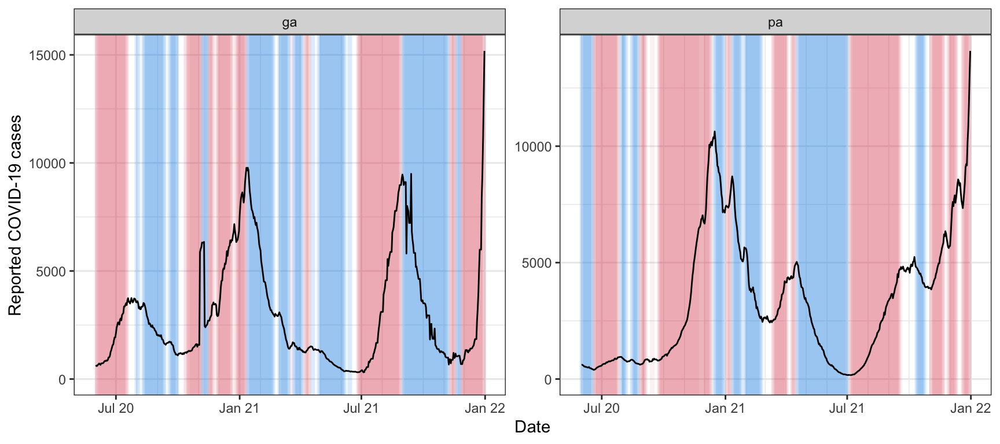
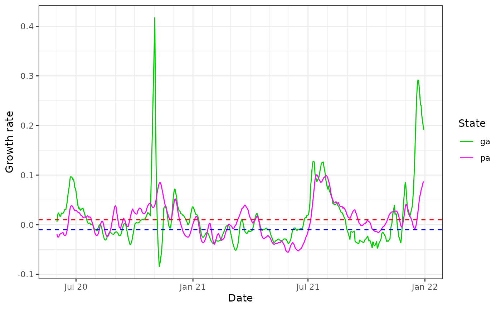
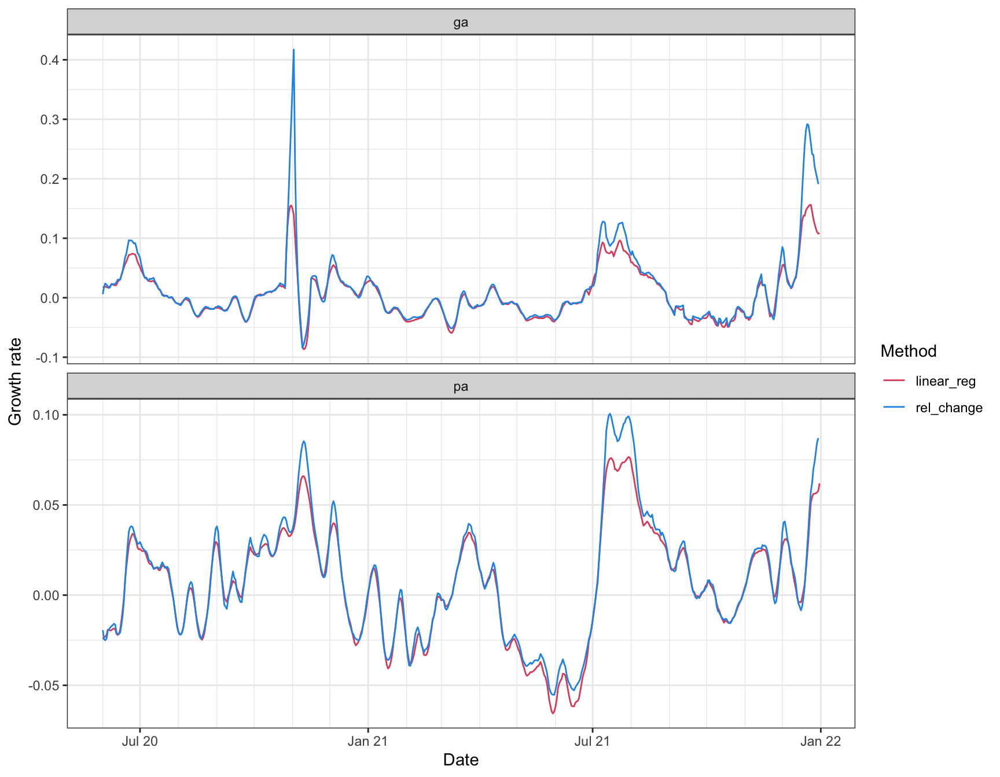
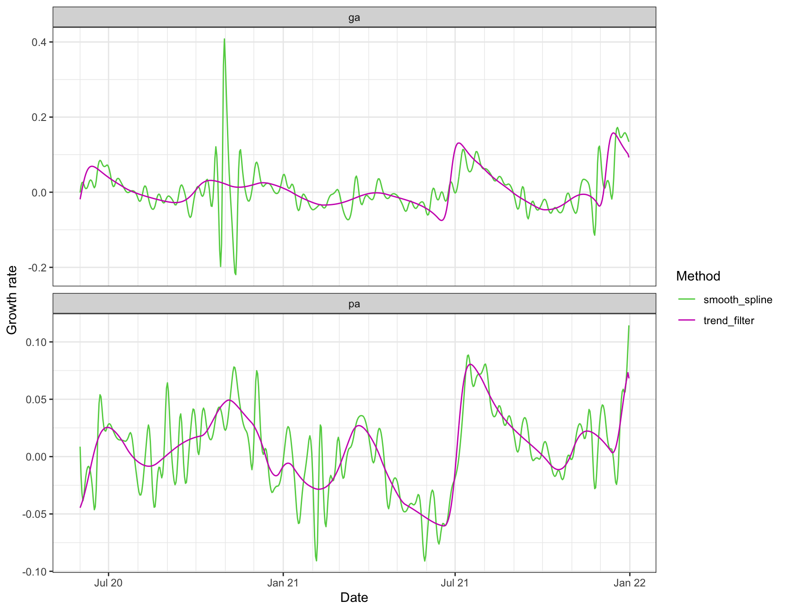
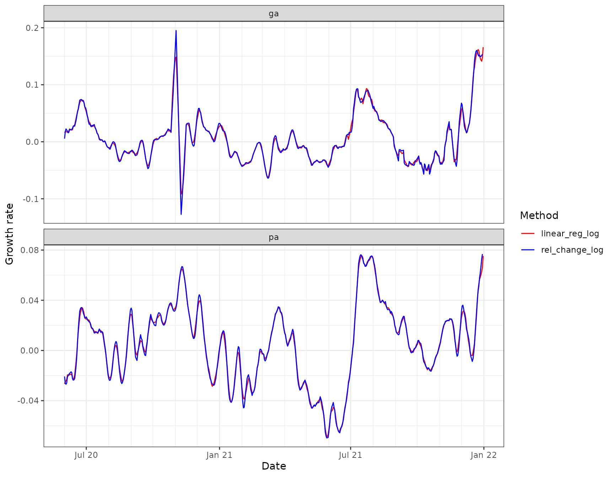
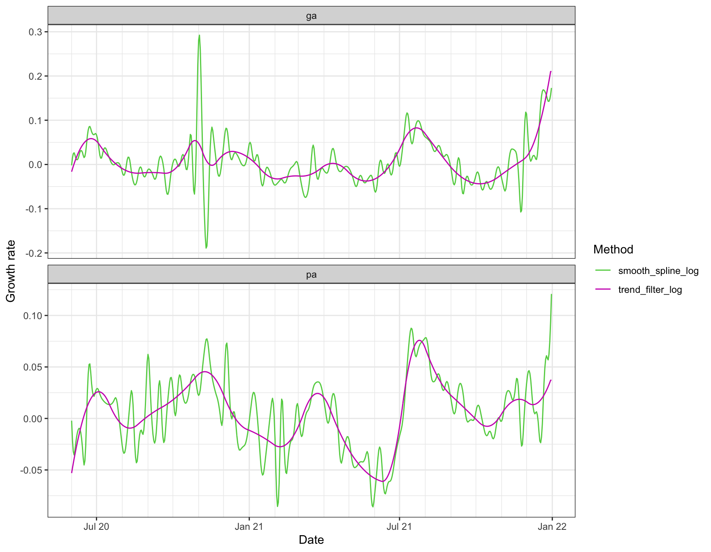

A basic way of assessing growth in a signal is to look at its relative change over two neighboring time windows. The epiprocess package provides a function growth_rate() to compute such relative changes, as well as more sophisticated estimates the growth rate of a signal. We investigate this functionality in the current vignette, applied to state-level daily reported COVID-19 cases from GA and PA, smoothed using a 7-day trailing average.
library(covidcast) library(epiprocess) library(dplyr) library(tidyr) x <- covidcast_signal("jhu-csse", "confirmed_7dav_incidence_num", start_day = "2020-06-01", end_day = "2021-12-31", geo_type = "state", geo_values = c("ga", "pa")) %>% select(geo_value, time_value, cases = value) %>% arrange(geo_value, time_value) %>% as_epi_df()
The growth rate of a function \(f\) defined over a continuously-valued parameter \(t\) is defined as \(f'(t)/f(t)\), where \(f'(t)\) is the derivative of \(f\) at \(t\). To estimate the growth rate of a signal in discrete-time (which can be thought of as evaluations or discretizations of an underlying function in continuous-time), we can estimate the derivative and divide by the signal value itself (or possibly a smoothed version of the signal value).
The growth_rate() function takes a sequence of underlying design points x and corresponding sequence y of signal values, and allows us to choose from the following methods for estimating the growth rate at a given reference point x0, by setting the method argument:
y over the second half of a sliding window of bandwidth h centered at the reference point x0, and \(\bar A\) the average over the first half. This can be seen as using a first-difference approximation to the derivative.y on x over a sliding window centered at the reference point x0, divided by the fitted value from this linear regression at x0.x0 from a smoothing spline fit to x and y, via stats::smooth.spline(), divided by the fitted value of the spline at x0.x0 from polynomial trend filtering (a discrete spline) fit to x and y, via genlasso::trendfilter(), divided by the fitted value of the discrete spline at x0.The default in growth_rate() is x0 = x, so that it returns an estimate of the growth rate at each underlying design point.
The default method is “rel_change”, which is the simplest way to estimate growth rates. The default bandwidth is h = 7, which for daily data, considers the relative change in a signal over adjacent weeks. We can wrap growth_rate() in a call to dplyr::mutate() to append a new column to our epi_df object with the computed growth rates.
x <- x %>% group_by(geo_value) %>% mutate(cases_gr1 = growth_rate(time_value, cases)) head(x, 10)
## # A tibble: 10 × 4
## geo_value time_value cases cases_gr1
## <chr> <date> <dbl> <dbl>
## 1 ga 2020-06-01 643. 0.00601
## 2 ga 2020-06-02 603. 0.0185
## 3 ga 2020-06-03 608 0.0240
## 4 ga 2020-06-04 656. 0.0218
## 5 ga 2020-06-05 677. 0.0193
## 6 ga 2020-06-06 718. 0.0163
## 7 ga 2020-06-07 691. 0.0180
## 8 ga 2020-06-08 656. 0.0234
## 9 ga 2020-06-09 720. 0.0227
## 10 ga 2020-06-10 727. 0.0227We can visualize these growth rate estimates by plotting the signal values and highlighting the periods in time for which the relative change is above 1% (in red) and below -1% (in blue), faceting by geo value.
library(ggplot2) theme_set(theme_bw()) upper = 0.01 lower = -0.01 ggplot(x, aes(x = time_value, y = cases)) + geom_tile(data = x %>% filter(cases_gr1 >= upper), aes(x = time_value, y = 0, width = 7, height = Inf), fill = 2, alpha = 0.08) + geom_tile(data = x %>% filter(cases_gr1 <= lower), aes(x = time_value, y = 0, width = 7, height = Inf), fill = 4, alpha = 0.08) + geom_line() + facet_wrap(vars(geo_value), scales = "free_y") + scale_x_date(minor_breaks = "month", date_labels = "%b %y") + labs(x = "Date", y = "Reported COVID-19 cases")

As a more direct visualization, we plot the estimated growth rates themselves, overlaying the curves for the two states on one plot.
ggplot(x, aes(x = time_value, y = cases_gr1)) + geom_line(aes(col = geo_value)) + geom_hline(yintercept = upper, linetype = 2, col = 2) + geom_hline(yintercept = lower, linetype = 2, col = 4) + scale_color_manual(values = c(3,6)) + scale_x_date(minor_breaks = "month", date_labels = "%b %y") + labs(x = "Date", y = "Growth rate", col = "State")

We can see that the estimated growth rates from the relative change method are somewhat volatile, and there appears to be some bias towards towards the right boundary of the time span—look at the estimated growth rate for Georgia in late December 2021, which takes a potentially suspicious dip. In general, estimation of derivatives will be difficult near the boundary, but relative changes can suffer from particularly noticeable boundary bias because they are based on a difference in averages over two halves of a local window, and with this simplistic approach, one of these halves will be truncated near a boundary.
The second simplest method available is “linear_reg”, whose default bandwidth is again h = 7. Compared to “rel_change”, it appears to behave similarly overall, but thankfully avoids some of the troublesome spikes:
x <- x %>% group_by(geo_value) %>% mutate(cases_gr2 = growth_rate(time_value, cases, method = "linear_reg")) x %>% pivot_longer(cols = starts_with("cases_gr"), names_to = "method", values_to = "gr") %>% mutate(method = recode(method, cases_gr1 = "rel_change", cases_gr2 = "linear_reg")) %>% ggplot(aes(x = time_value, y = gr)) + geom_line(aes(col = method)) + scale_color_manual(values = c(2,4)) + facet_wrap(vars(geo_value), scales = "free_y", ncol = 1) + scale_x_date(minor_breaks = "month", date_labels = "%b %y") + labs(x = "Date", y = "Growth rate", col = "Method")

We can also use a nonparametric method to estimate the derivative, through “smooth_spline” or “trend_filter”. The latter is going to be generally more computationally expensive, but it is also able to adapt better to the local level of smoothness. (The apparent efficiency is actually compounded by the particular implementations and default settings for these methods: “trend_filter” is based on a full solution path algorithm provided in the genlasso package, and performs cross-validation by default in order to pick the level of regularization; read the documentation for growth_rate() more details.)
x <- x %>% group_by(geo_value) %>% mutate(cases_gr3 = growth_rate(time_value, cases, method = "smooth_spline"), cases_gr4 = growth_rate(time_value, cases, method = "trend_filter")) x %>% select(geo_value, time_value, cases_gr3, cases_gr4) %>% pivot_longer(cols = starts_with("cases_gr"), names_to = "method", values_to = "gr") %>% mutate(method = recode(method, cases_gr3 = "smooth_spline", cases_gr4 = "trend_filter")) %>% ggplot(aes(x = time_value, y = gr)) + geom_line(aes(col = method)) + scale_color_manual(values = c(3,6)) + facet_wrap(vars(geo_value), scales = "free_y", ncol = 1) + scale_x_date(minor_breaks = "month", date_labels = "%b %y") + labs(x = "Date", y = "Growth rate", col = "Method")

In this particular example, the trend filtering estimates of growth rate appear to be much more stable than those from the smoothing spline, and also much more stable than the estimates from local relative changes and linear regressions.
The smoothing spline growth rate estimates are based on the default settings in stats::smooth.spline(), and appear severely under-regularized here. Any of the arguments to stats::smooth.spline() can be customized by passing them as additional arguments ... in the call to growth_rate(); similarly, we can also use additional arguments to customize the settings in the underlying trend filtering functions genlasso::trendfilter(), genlasso::cv.trendfilter(), and the documentation for growth_rate() gives the full details.
In general, and alternative view for the growth rate of a function \(f\) is given by defining \(g(t) = \log(f(t))\), and then observing that \(g'(t) = f'(t)/f(t)\). Therefore, any method that estimates the derivative can be simply applied to the log of the signal of interest, and in this light, each method above (“rel_change”, “linear_reg”, “smooth_spline”, and “trend_filter”) has a log scale analog, which can be used by setting the argument log_scale = TRUE in the call to growth_rate().
x <- x %>% group_by(geo_value) %>% mutate(cases_gr5 = growth_rate(time_value, cases, method = "rel_change", log_scale = TRUE), cases_gr6 = growth_rate(time_value, cases, method = "linear_reg", log_scale = TRUE), cases_gr7 = growth_rate(time_value, cases, method = "smooth_spline", log_scale = TRUE), cases_gr8 = growth_rate(time_value, cases, method = "trend_filter", log_scale = TRUE)) x %>% select(geo_value, time_value, cases_gr5, cases_gr6) %>% pivot_longer(cols = starts_with("cases_gr"), names_to = "method", values_to = "gr") %>% mutate(method = recode(method, cases_gr5 = "rel_change_log", cases_gr6 = "linear_reg_log")) %>% ggplot(aes(x = time_value, y = gr)) + geom_line(aes(col = method)) + scale_color_manual(values = c(2,4)) + facet_wrap(vars(geo_value), scales = "free_y", ncol = 1) + scale_x_date(minor_breaks = "month", date_labels = "%b %y") + labs(x = "Date", y = "Growth rate", col = "Method")

x %>% select(geo_value, time_value, cases_gr7, cases_gr8) %>% pivot_longer(cols = starts_with("cases_gr"), names_to = "method", values_to = "gr") %>% mutate(method = recode(method, cases_gr7 = "smooth_spline_log", cases_gr8 = "trend_filter_log")) %>% ggplot(aes(x = time_value, y = gr)) + geom_line(aes(col = method)) + scale_color_manual(values = c(3,6)) + facet_wrap(vars(geo_value), scales = "free_y", ncol = 1) + scale_x_date(minor_breaks = "month", date_labels = "%b %y") + labs(x = "Date", y = "Growth rate", col = "Method")

Comparing the rel_change_log curves with their rel_change counterparts (shown in earlier figures), we see that the former curves appear less volatile and match the linear regression estimates much more closely. In particular, when rel_change has upward spikes, rel_change_log has less pronounced spikes. Why does this occur? The estimate of \(g'(t)\) here can be expressed as \(\mathbb E[\log(B)-\log(A)]/h = \mathbb E[\log(1+hR)]/h\), where \(R = ((B-A)/h) / A\), and the expectation refers to averaging over the \(h\) observations in each window. Consider the following two relevant inequalities, both due to concavity of the logarithm function:
\[ \mathbb E[\log(1+hR)]/h \leq \log(1+h\mathbb E[R])/h \leq \mathbb E[R]. \]
The first inequality is Jensen’s; the second inequality is because the tangent line of a concave function lies above it. Finally, we observe that \(\mathbb E[R] \approx ((\bar B-\bar A)/h) / \bar A\), which the rel_change estimate.
This explains why the rel_change_log curve often lies below the rel_change curve.